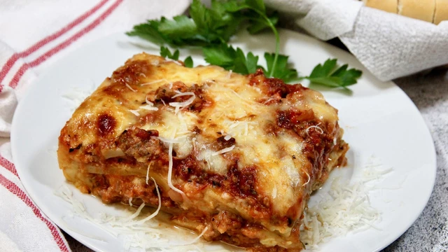

Lasagna Recipe

Description
Lasagna is a classic Italian dish consisting of
layers of flat pasta sheets, tomato sauce, and
various other ingredients such as ground meat,
cheese, and vegetables. The dish is typically
baked in an oven and served hot. Lasagna is
popular all over the world and has many variations,
including vegetarian and gluten-free options.
It is often served as a main course and is a hearty
and satisfying meal.
Ingredients
- 1 lb ground beef
- 1 onion, chopped
- 2 cloves garlic, minced
- 1 jar (24 oz) of spaghetti sauce
- 1 can (14.5 oz) of diced tomatoes, undrained
- 2 teaspoons dried basil
- 1/2 teaspoon salt
- 1/4 teaspoon black pepper
- 6 lasagna noodles, uncooked
- 1-1/2 cups ricotta cheese
- 2 cups shredded mozzarella cheese
Instructions
- Preheat oven to 375°F (190°C).
- In a large skillet, cook the ground beef, onion, and garlic over medium heat until meat is no longer pink. Drain any excess fat.
- Add the spaghetti sauce, diced tomatoes, basil, salt, and pepper. Bring to a boil, then reduce heat and let simmer for 10 minutes.
- Spread 1/2 cup of the meat sauce into an ungreased 9x13 inch baking dish.
- Place three lasagna noodles on top of the sauce.
- Spread 1/2 of the ricotta cheese on top of the noodles.
- Spoon 1 cup of the meat sauce on top of the ricotta cheese.
- Sprinkle 1 cup of the shredded mozzarella cheese on top of the sauce.
- Repeat layers starting with the noodles and ending with the mozzarella cheese.
- Cover with foil and bake for 25 minutes.
- Remove foil and bake for an additional 25 minutes or until cheese is melted and bubbly.
- Let the lasagna cool for 10 minutes before serving.